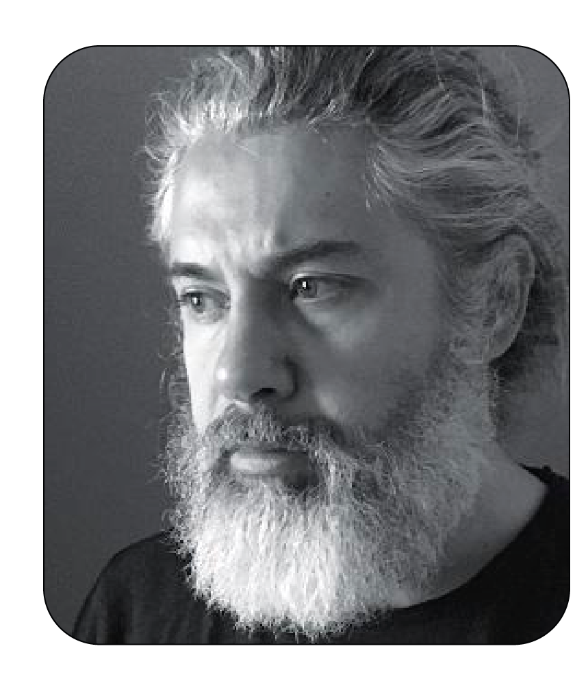
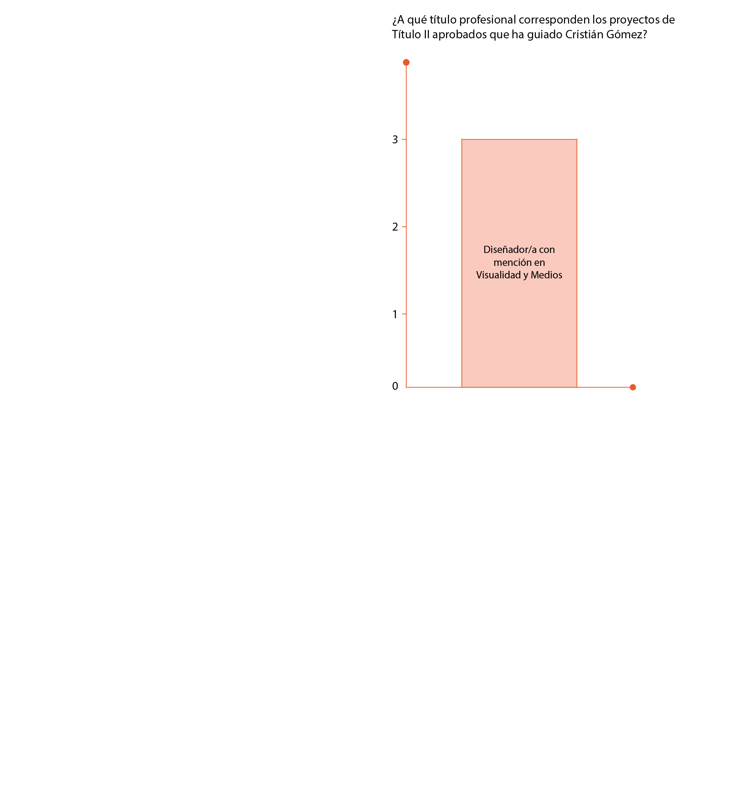

Cristián Gómez Moya
Profesor Asociado Categoría académica ordinaria Departamento de Diseño Facultad de Arquitectura y Urbanismo
Enfoque de guiatura
Se desempena como investigador, creador y curador en artes visuales, destacandose por la creación de proyectos editoriales, curatoriales y mediales que exploran la cultura visual, la estética y la micropolítica.
Áreas de interés


Áreas de interés
Atendiendo al quehacer en investigación y creación de la Facultad de Arquitectura y Urbanismo, se relaciona con:
- Área Prioritaria 7: Culturas visuales, materiales-inmateriales y mediales
- Área Prioritaria 8: Fenómenos sensibles, perceptuales y corporales en el entorno
Líneas de Investigación
Atendiendo a las Líneas de Investigación del Departamento de Diseño, se relaciona con:
- Estudios Visuales y Mediales
Programa Académico
Posibles énfasis del Ciclo 3 del Plan de Estudios del Programa Académico, se relaciona con:
- Investigación
- Creación

publicaciones
relacionados
aaaaa
iiii
oooo
uuuu
euuh
huhuh
hjijijii
hgugugug
| Egresado/a | Título | Semestre | Proyecto | Nota |
|---|